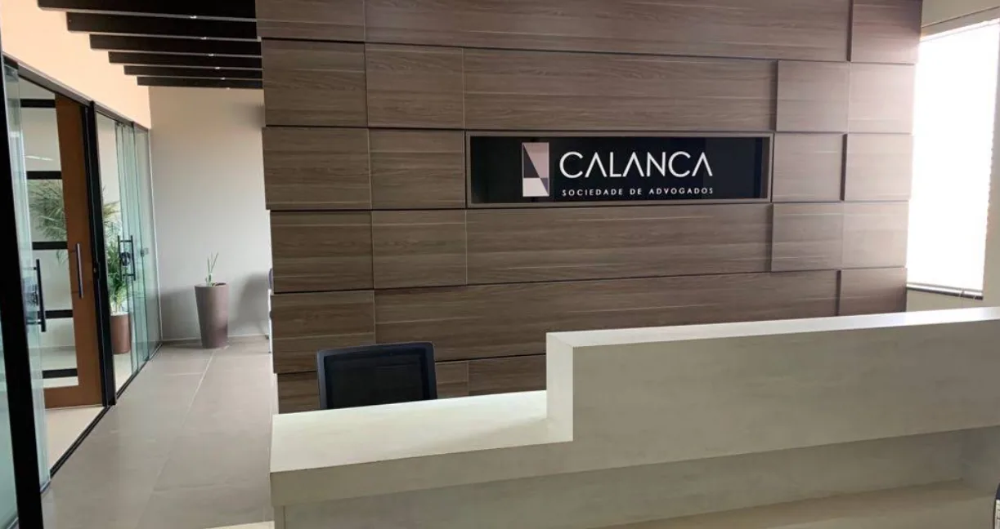
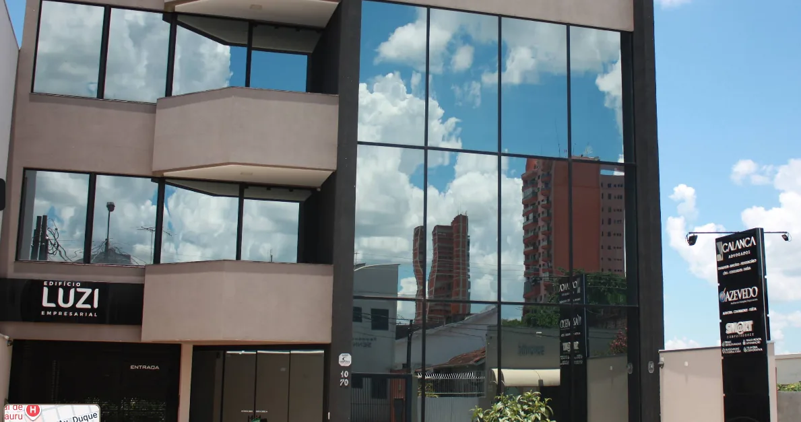
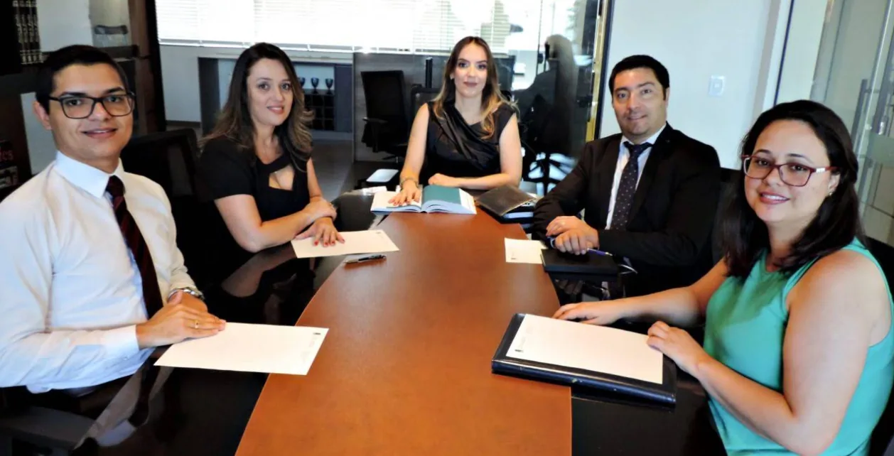

Atuação estratégica em Direito Previdenciário (INSS), Pessoas com Deficiência, Trabalhista, Cível e Empresarial — do primeiro atendimento até a solução do seu caso.

Há 25 anos a CALANCA Sociedade de Advogados atua na defesa de direitos previdenciários, trabalhistas, cíveis e empresariais, com foco especial em pessoas acidentadas e pessoas com deficiência.
Estrutura própria nos Altos da Cidade, atendimento presencial e online, e uma equipe multidisciplinar pronta para conduzir cada caso com atenção individual e orientação estratégica.
Aposentadorias, auxílio por incapacidade, revisão de benefícios e recursos contra negativas do INSS.
Benefício assistencial (BPC/LOAS), aposentadoria da pessoa com deficiência e garantia de direitos.
Responsabilidade civil, acidentes de trânsito e ações indenizatórias.
Acidentes de trabalho, verbas rescisórias e representação em ações trabalhistas.
Consultoria jurídica preventiva e contratos para empresas de todos os portes.
Advogados dedicados às áreas Previdenciária, PCD, Trabalhista, Cível e Empresarial, prontos para conduzir cada caso com atenção individual — da estratégia inicial até a solução final.

417 avaliações reais de clientes atendidos
Ver avaliações no GoogleEm observância ao Código de Ética e Disciplina da OAB e ao Provimento nº 205/2021, os relatos individuais de clientes não são reproduzidos neste site. As avaliações podem ser consultadas diretamente no Google.
Envie uma mensagem pelo WhatsApp. A equipe da CALANCA retorna o contato para entender sua necessidade e orientar os próximos passos.
Fale conosco ↗